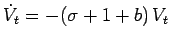

Inhalt Index DeskTop Bronstein

 Dynamische Systeme und Chaos Gewöhnliche Differentialgleichungen und Abbildungen Qualitative Theorie gewöhnlicher Differentialgleichungen Existenz des Flusses und Phasenraumstruktur
Dynamische Systeme und Chaos Gewöhnliche Differentialgleichungen und Abbildungen Qualitative Theorie gewöhnlicher Differentialgleichungen Existenz des Flusses und Phasenraumstruktur


Seien  der Fluß von (17.1), eine beliebige beschränkte und meßbare Menge, das n-dimensionale Volumen von Dt (s. Abbildung).
der Fluß von (17.1), eine beliebige beschränkte und meßbare Menge, das n-dimensionale Volumen von Dt (s. Abbildung).
Dann gilt für beliebiges die Beziehung . Für n = 3 lautet der Satz von LIOUVILLE:
| (17.12) |
Folgerung: Gilt für (17.1) divf(x) < 0 in  , so ist der Fluß von (17.1) volumenschrumpfend. Gilt div in
, so ist der Fluß von (17.1) volumenschrumpfend. Gilt div in  , so ist der Fluß von (17.1) volumenerhaltend.
, so ist der Fluß von (17.1) volumenerhaltend.
| Beispiel A |
|
Für das LORENZ-System (17.2) ist . Wegen und b > 0 ist also . Mit dem Satz von LIOUVILLE folgt für eine beliebige beschränkte und meßbare Menge offenbar . Für die lineare Differentialgleichung  lautet die Lösung |
| Beispiel B |
|
Sei eine offene Teilmenge und eine C2-Funktion. Dann heißt HAMILTONsche Differentialgleichung. Die Funktion H heißt HAMILTON-Funktion des Systems. Bezeichnet f die rechte Seite dieser Differentialgleichung, so gilt offenbar . HAMILTONsche Differentialgleichungen sind also volumenerhaltend. |